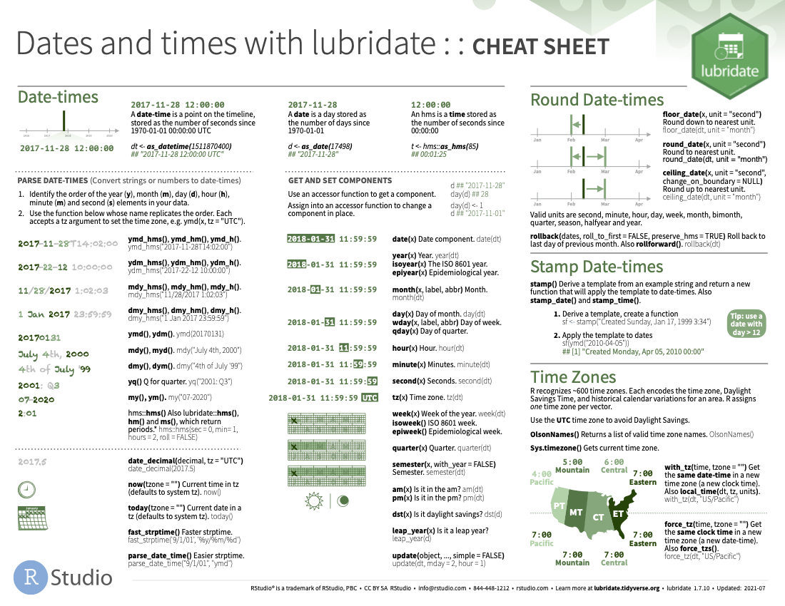

cheat sheets
0.1 R cheat sheets
A collection of useful sheets for programming in R.
Cheatsheets online at RStudio site
In RStudio you can directly access the cheat sheets using
Help >> Cheat Sheets
0.1.1 offline version of relevant cheat sheets (August 2018)
The RStudio IDE (download RStudio IDE cheat sheet)is the most popular integrated development environment for R. Do you want to write, run, and debug your own R code? Work collaboratively on R projects with version control? Build packages or create documents and apps? No matter what you do with R, the RStudio IDE can help you do it faster. This cheat sheet will guide you through the most useful features of the IDE, as well as the long list of keyboard shortcuts built into the RStudio IDE.

base R (download base R cheat sheet) overview of Vectors, Matrices, Lists, Data Frames, Functions and more in base R.
The Data Import cheat sheet (download Data Import cheat sheet) reminds you how to read in flat files with http://readr.tidyverse.org/, work with the results as tibbles, and reshape messy data with tidyr. Use tidyr to reshape your tables into tidy data, the data format that works the most seamlessly with R and the tidyverse.
The tidyr package (download tidyr cheat sheet) provides a framework for creating and shaping tidy data, the data format that works the most seamlessly with R and the tidyverse. The front page of this cheatsheet provides an overview of tibbles and reshaping tidy data. The back page provides an overview of creating, reshaping, and transforming nested data and list-columns with tidyr, tibble, and dplyr. With list-columns, you can use a simple data frame to organize any collection of objects in R.
dplyr (download Data transformation cheat sheet) provides a grammar for manipulating tables in R. This cheat sheet will guide you through the grammar, reminding you how to select, filter, arrange, mutate, summarise, group, and join data frames and tibbles.
Also very informative is the older data wrangling cheat sheet (download data wrangling cheat sheet)
The ggplot2 package (download Data visualization cheat sheet) lets you make beautiful and customizable plots of your data. It implements the grammar of graphics, an easy to use system for building plots. See docs.ggplot2.org for detailed examples.
The purrr package (download purrr cheat sheet) makes it easy to work with lists and functions. This cheatsheet will remind you how to manipulate lists with purrr as well as how to apply functions iteratively to each element of a list or vector. The back of the cheatsheet explains how to work with list-columns. With list columns, you can use a simple data frame to organize any collection of objects in R.
The stringr package (download stringr cheat sheet) provides an easy to use toolkit for working with strings, i.e. character data, in R. This cheatsheet guides you through stringr’s functions for manipulating strings. The back page provides a concise reference to regular expresssions, a mini-language for describing, finding, and matching patterns in strings.
The forcats package (download stringr cheat sheet) Factors are R’s data structure for categorical data. The forcats package makes it easy to work with factors. This cheatsheet reminds you how to make factors, reorder their levels, recode their values, and more. Updated July 2021.

Lubridate (download Lubridate cheat sheet) makes it easier to work with dates and times in R. This lubridate cheatsheet covers how to round dates, work with time zones, extract elements of a date or time, parse dates into R and more. The back of the cheatsheet describes lubridate’s three timespan classes: periods, durations, and intervals; and explains how to do math with date-times.

survminer (download Lubridate cheat sheet) - elegant survival plots